GE Exclusive Use Only
Direction 5670006, Rev# 1
Discovery MR750w GEM Service Methods
Module Version 6.0, Version Date 12/8/09
GE Exclusive Use Only |
This document describes the function of the Heat Exchanger Cabinet (HEC), GE P/N 5161931. An overview is shown in Illustration 1. Fundamentally, the cooling cabinet provides a means for the gradient subsystem to exchange heat from the secondary coolant running through the power electronics and gradient coil to the primary hospital coolant. The cooling cabinet provides a means for the system to transfer heat from the gradient and power electronics to the closed-loop, deionized water cooling circuit which, in turn, transfers the heat to the facility coolant through the internal heat exchanger module.
Hospital (customer) coolant is provided to the HEC. Dual-loop, liquid-to-liquid heat exchangers are used to circulate DVMR coolant through the Power, Gradient and RF (PGR) Cabinet and Gradient Coil, critical components of an MRI system. The Heat Exchanger module isolates the deionized water closed-loop coolant from the facility coolant so that these do not come into contact and mix. The HEC must control and monitor control parameters and interface to the MR system. A small portion of customer coolant is provided to the cryo-cooler compressor. The HEC also houses a chilled air blower and provides cryo-cooler compressor temperature and volumetric flow signals to the magnet monitor.
Additional information for the HEC can be found in the vendor manual and in the Interactive Block Diagrams.
Illustration 1: External Water and Air Connections
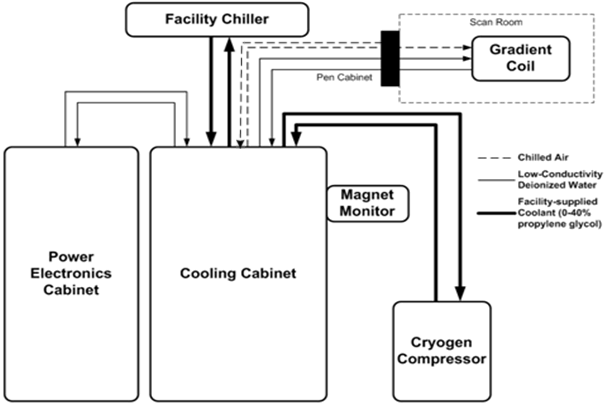
The HEC receives power from the Main Disconnect Panel (MDP), which is routed and rectified inside the HEC. The Deionization Kit and Cryo-cooler Compressor receive electrical power from the cooling cabinet. (See Illustration 2.)
Illustration 2: Electrical Power Distribution
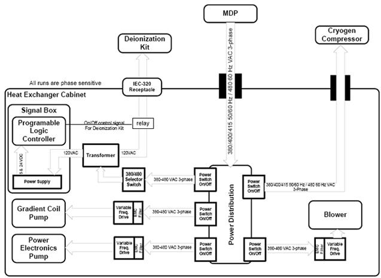
The HEC accepts a three-phase, solidly grounded WYE with Ground (four-wire system) at 380/400/415 VAC, 50/60 ±3 Hz or 480 VAC, 60 ±3 Hz from the MR system MDP. It requires no more than 20 kVA maximum continuous power and 20 kVA peak power. The HEC has a maximum breaker rating of 50 amps, and is equipped with a ground stud. All electrical connections are routed through the top of the cabinet.
Power switches are labeled inside the Power Box as follows:
Power Electronics Pump: PPMP CB
Gradient Coil Pump: GPMP CB
Controller/Signal Box: PWR CB
Cryo Compressor: CRY CB
Chiller Air Blower: BLW CB
The pumps are driven by Variable Frequency Drives (VFD) located inside the HEC to provide the same capability, given the voltage and frequency requirements listed in Section 3.2.1. The pumps receive power from within the HEC, are ramped at start up and protected against phase reversal. The pump motor is rated between 40 and 70 Hz for possible VFD operation. VFD line noise is filtered inside the cabinet, and does not enter the line or get emitted outside of the cabinet.
The HEC routes incoming power to the cryocooler compressor. Power allocation for the cryocooler compressor is 9 kVA (12 amps nominal), and the maximum power consumption is 12 kVA. The power switch for the cryocooler compressor is at least 15 amps. The power cables are sized per GE Healthcare Drawing 2188440-2.
The circuit breaker in the HEC is a manual power switch for the cryocooler compressor. The HEC does not automatically reset power to the cryocooler compressor. If the cryocooler compressor shuts down because of inadequate water flow, it may take a manual power cycle in the HEC to restart the cryocooler compressor once water flow is restarted.
The HEC provides 120 VAC (50 or 60 Hz) with a maximum of 5 amps to the Deionization Service Kit. Power to the Deionization Kit Service outlet is turned on or off via the HEC Controller. A standard NEMA 5-15P Hospital Grade receptacle (labeled DI KIT) is located on the top or front of the cabinet and provides a means to connect to the Deionization Service Kit.
The Chilled Air Blower is driven by a VFD located inside the cabinet in order to provide the same capability, given the voltage and frequency requirements listed in Section 3.2.1. The chilled air blower receives power from within the HEC, is ramped at startup and protected against phase reversal. It is rated for VFD operation. VFD line noise is filtered inside the cabinet, and does not enter the line or get emitted outside of the cabinet. The Supplier is responsible for assisting GE Healthcare Engineering in resolving any EMC related issues resulting from VFD operation.
The HEC has:
A low-power mode for long periods of MRI system inactivity (for example, for night time operation) where the pumps and blower may operate at a lower frequency (speed). The low-power command comes from the MR Host computer approximately 15 minutes after an exam is ended. Once a new scan is prescribed, the HEC exits the low-power mode.
An automatic restart function that allows the HEC pumps to restart when power is restored to the facility after a power outage without any action required from the Operator.
The internal plumbing features inside the HEC is shown in Illustration 3 for reference only.
Illustration 3: Heat Exchanger Cabinet Plumbing Diagram
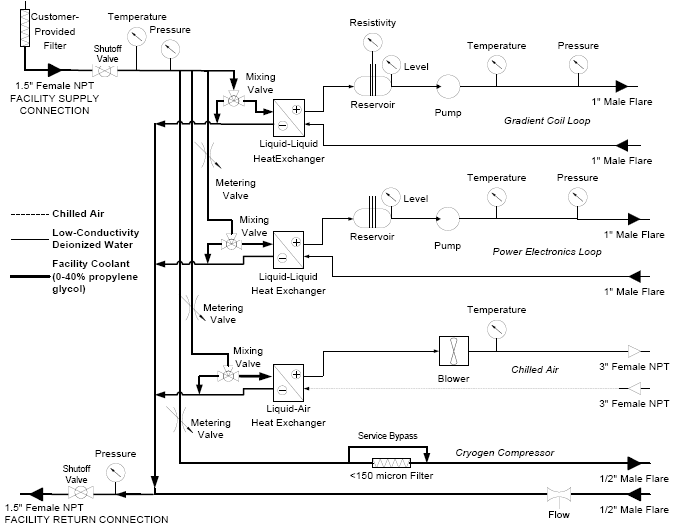
The customer is responsible for providing cooling water with up to 40% propylene-glycol by volume for intake by the HEC. Coolant PH range, coolant quality and filtration requirements can be found in the Pre-Installation manual for the respective MR system.
The HEC provides a means for isolating and draining the customer-supplied coolant contained within the cabinet. GE Heatlhcare specifies the type of thread, but does not specify any particular method or hose/piping type to connect the facility chiller supply/return to the HEC.
The customer is responsible for:
Continuously providing at least 114 L/min (30 gpm) for a 40% propylene-glycol water mixture to the HEC. The maximum supply pressure is 6 bar (87 psi) measured at the inlet of the HEC.
Providing coolant supply connections with 1.5 inch female NPT Threads capable of being connected to the HEC.
The HEC requires a specific range of incoming coolant temperature from the hospital's chilled water supply or chiller. The minimum and maximum allowable temperatures are listed in the Pre-Installation manual for the respective MR system as differences may exist between systems. These minimum and maximum temperatures were chosen to effectively perform cooling for the MR system, and should be strictly adhered to.
Because the incoming temperature of water is significantly colder than room temperature, condensation on the hoses and internal components in the HEC is a possibility. The facility lines in the HEC are insulated to minimize the amount of condensation collecting on the piping and dripping inside the HEC. The customer should provide insulation for their chilled water lines, valves and flow meters if condensation collection becomes an issue.
The HEC uses sensors to measure these characteristics of the customer-supplied coolant:
Supply and Return Pressures
Temperature
The illustration below shows the coolant distribution inside the PGR Cabinet along with hose sizes and connectors.
Illustration 4: Coolant Distribution in PGR Cabinet

The HEC circulates the coolant specified in GEHC document 5174313PSP through the gradient coil. The gradient coil coolant may come into contact with copper, brass, plastic and stainless steel materials only. The gradient cooling loop does not use parts that may introduce ferrous particles into the coolant.
The coolant circulated through the gradient coil is specifically formulated for the MR system. It contains blue colorant and low levels of corrosion inhibitors and biocides. Additionally, the coolant is specifically maintained to be highly resistive, so leakage currents from the gradient coil do not create unsafe conditions elsewhere in the MR system. The coolant may be disposed of down any standard drain, as it does not contain high concentrations of hazardous chemicals
The HEC pumps water through the gradient coil at pressures below 6.0 bar. The programmable logic controller in the HEC uses the known pump speed and measured coolant pressure to derive a flow rate through the coil. The MR Host Computer contains setpoints for the pump speed as well as low-flow alarm limits in a configuration file specific to that MR system and coil design.
Supply and Return connections for the gradient coil are 1 inch, 37° (JIC) brass, male, flare fittings located at the top of the HEC. The Supply connection on the gradient coil has a blue color indicator, and the Return connection has a black color indicator. Supply and return gradient coil connections are electrically grounded to the cabinet, as the coolant is exposed to 660 amps ±1,650 volts inside the gradient coil.
The gradient coil coolant supply temperature is set to 18° C in a configuration file located on the MR Host Computer. The HEC provides coolant to the gradient coil at a temperature within ±1° C of the set point temperature. The desired gradient coil coolant supply temperature is communicated to the HEC via the method specified in Section 6.3.
The cooling capacity of the gradient coil cooling loop is at least 25 kW. The parameters that define the gradient coil temperature control loop are stored in a configuration file located on the MR Host Computer and communicated to the Controller via the method specified in Section 6.3.
Sensors in the HEC measure the following Gradient Coil Coolant parameters:
Resistivity
Supply Pressure
Supply Temperature
The HEC also:
Measures or derives gradient coil volumetric flow, and
Monitors two reservoir-level switches that turn on when gradient coil coolant volume levels reach Warning and Alarm levels. The pump will automatically shut off when the liquid level in the reservoir reaches the Alarm level.
| ||||
| The Power Electronics coolant may come into contact with copper, brass, plastic and stainless steel materials only. | ||||
The HEC circulates the coolant, specified in GE Healthcare Document 5174313PSP, through the PGR Cabinet and is specifically formulated for the MR system. It contains blue colorant and low levels of corrosion inhibitors and biocides. The coolant may be disposed of down any standard drain as it does not contain high concentrations of hazardous chemicals.
The HEC pumps liquid coolant through the PGR Cabinet at pressures below 6.0 bar. The flow rate through the PGR Cabinet is set via the pump speed, and communicated by the MR Host Computer. This pump speed and the subsequent flow rate may be different for each MR system as some systems use a liquid-cooled RF Amplifier in the PGR Cabinet.
Flow rate is derived from the known pump speed and measured coolant pressure in the HEC.
Low-flow and high-flow Alarm setpoints are defined in a configuration file on the Host Computer, and will post error messages when necessary.
The supply and return connections for the PGR Cabinet are 1 inch, 37° (JIC) brass, male, flare fittings located at the top of the HEC. The Supply connection on the PGR Cabinet has a green color indicator, and the Return connection has a red color indicator.
The HEC provides coolant to the PGR Cabinet at 30° C. The temperature may automatically increase to 40° C, based on the local dewpoint temperature inside the PGR Cabinet, to minimize the opportunity for condensation. Relative humidity and ambient temperature inside the PGR Cabinet are communicated to the HEC Controller via the method specified in Section 6.3. The Controller calculates the dewpoint temperature. The cooling capacity of the PGR Cabinet cooling loop is at least 35 kW. Parameters that define the power electronics temperature control loop are stored in a configuration file located on the MR Host Computer.
Sensors in the HEC measure the power electronics coolant pressure and temperature. The HEC measures or derives the power electronics coolant volumetric flow, and monitors two reservoir-level switches that turn on when the power electronics coolant volume levels reach Warning and Alarm levels. The pump will automatically shut off when the liquid level in the reservoir reaches the Alarm level.
The Cryo-cooler Compressor uses a portion of the same customer-provided coolant to the HEC, and operates under the customer coolant characteristics specified in Section 4.2. Inside the HEC, a flow restrictor splits off flow from the customer-supplied coolant to provide the cryo-cooler compressor with a relatively constant flow rate. Changes or reductions in flow rate may indicate:
Inadequate total flow coming from the customer-provided Chiller into the HEC, or
Cryo-cooler compressor filter, located at the top of the HEC, is clogged.
The filter is a FRU, but is also cleanable. The HEC provides a bypass to allow uninterrupted flow when changing this filter.
The HEC allocates at least 7 L/min (1.8 gpm) of the customer-supplied coolant to the cryo-cooler compressor 24 hours per day, 7 days per week, 365 days per year to maximize proper uninterrupted magnet operation. Supply and Return connections for the cryo-cooler compressor are 0.5 inch, 37° (JIC) brass, male, flare fittings located at the top of the HEC. The Supply connection on the cryo-cooler compressor has a gray color indicator, and the Return connection has a yellow color indicator.
The Cryo-cooler Compressor uses a portion of the same customer-supplied coolant to the HEC, and operates under the customer-supplied water temperatures specified in Section 4.2.3.
The volumetric flow of the coolant supplied to the Cryo-cooler Compressor is measured using a flow meter inside the HEC. The signal box in the HEC has a 9-pin, Sub D Connector that communicates cryo-cooler flow and coolant temperature to the Magnet Monitor. The pin outs of the connector are shown in Table 1.
Table 1: Cryocooler Compressor 9-Pin, Sub D Configuration
| Pin | Function |
|---|---|
| 1 | Common |
| 2 | Common |
| 6 | Cryo-cooler Compressor Flow |
| 7 | Compressor Temperature |
The HEC draws air from the Scan Room through a 3-inch, female NPT thread located on the top of the HEC. The Scan Room air is maintained by the customer within the environmental ranges shown in Table 2.
Table 2: Environmental Characteristics for Scan Room Air
| Characteristic | Minimum | Maximum |
| Temperature | 10° C | 26° C |
| Temperature Gradient | -10° C/hour | +10° C/hour |
| Humidity | 30% | 60% |
| Humidity Gradient | -5% RH/hour | +5% RH/hour |
The HEC is designed to supply adequate chilled air flow and pressure to maintain cooling in the RF Body Coil air space. This chilled air cools the RF Body Coil, and maintains bore temperatures within regulated limits. The MR Host Computer will alarm based on the flow rate (measured inside the magnet bore with airflow sensors) and temperature (measured at the output of the HEC). The chilled air supply connection is a 3-inch, female NPT thread located on the top of the HEC. To reduce the risk of condensation, customer-provided coolant is not supplied to the liquid-to-air heat exchanger when the blower is off.
The chilled air supply temperature is specific to the MR system, and set via the MR Host Computer using the method specified in Section 6.1.
The HEC provides chilled air at a temperature within ±2° C of the setpoint temperature.
Temperature excursions greater than +3° C will inhibit the current scan.
Temperature excursions greater than ±2° C of the setpoint will inhibit the next exam.
The parameters that define the chilled air temperature control loop are stored in a configuration file located on the MR Host Computer, and communicated to the Controller via method specified in Section 6.3.
The HEC measures the chilled air temperature prior to leaving the cabinet.
The PLC Controller is the brain of the HEC and its job is to:
Turn the pumps and blower On/Off
Tell the pumps and blower what frequency to run at
Maintain the water and air setpoint temperatures via PID control of three-way mixing valves in the facility water piping
Monitor sensors and generate warnings or alarms from the MR Host Computer until instructed otherwise.
The controller is connected to the SCP via Ethernet, and has a secondary serial connection between the Controller and Terminal Server. During a TPS reset, the MR Host Computer updates the PLC code if necessary, and passes the setpoint and alarm variables that reside in a configuration file.
The cooling cabinet configuration file can be found in: /w/config labeled, cooling.cfg.
Setpoint parameters vary between MR systems and are shown in Table 3.
Table 3: Setpoint Parameters
| Parameter | Meaning | Units |
| grad_coolant_flowrate | Pump frequency for Gradient Coil Loop | Hz |
| grad_coolant_temp_setpoint | Coolant temperature delivered to Gradient Coil | 0.1° C |
| xgd_coolant_flowrate | Pump frequency for PGR Cabinet | Hz |
| rf_air_flowrate | Blower frequency for Chilled Air Supply | Hz |
| rf_air_temp_setpoint | Coolant temperature for Chilled Air Supply | 0.1° C |
| NOTE: | The power electronics supply temperature (formerly xgd_coolant_temp_setpoint) is derived from the XGD air temperature and humidity. The minimum temperature is 30° C. |
PLC alarm parameters are shown in Table 4.
Table 4: PLC Alarm Parameters
| Parameter | Meaning | Units |
| cust_coolant_temp_low_limit | Lower limit for facility supply temperature | 0.1° C |
| cust_coolant_temp_high_limit | Upper limit for facility supply temperature | 0.1° C |
| cust_coolant_press_low_limit | Lower limit for facility supply pressure | 0.1 bar |
| cust_coolant_press_high_limit | Upper limit for facility supply pressure | 0.1 bar |
| cust_coolant_press_diff_low_limit | Minimum pressure differential between facility supply and return pressures | 0.1 bar |
| cust_coolant_return_pr_low_limit | Lower limit for facility return pressure | 0.1 bar |
| cust_coolant_return_pr_high_limit | Upper limit for facility return pressure | 0.1 bar |
| grad_coolant_temp_low_limit | Lower limit for gradient coil supply temperature | 0.1° C |
| grad_coolant_temp_high_limit | Upper limit for gradient coil supply temperature | 0.1° C |
| grad_coolant_press_low_limit | Lower limit for gradient coil supply pressure | 0.1 bar |
| grad_coolant_press_high_limit | Upper limit for gradient coil supply pressure | 0.1 bar |
| grad_coolant_flowrate_low_limit | Lower limit for gradient coil flow rate | 0.1 L/min |
| grad_coolant_flowrate_high_limit | Upper limit for gradient coil flow rate | 0.1 L/min |
| grad_coolant_resist_low_alarm | Alarm for coolant resistivity on gradient coil loop | 0.1 MOhm-cm |
| xgd_coolant_temp_low_limit | Lower limit for power electronics supply temperature | 0.1° C |
| xgd_coolant_temp_high_limit | Upper limit for power electronics supply temperature | 0.1° C |
| xgd_coolant_press_low_limit | Lower limit for power electronics supply pressure | 0.1 bar |
| xgd_coolant_press_high_limit | Upper limit for power electronics supply pressure | 0.1 bar |
| xgd_coolant_flowrate_low_limit | Lower limit for power electronics flow rate | 0.1 L/min |
| xgd_coolant_flowrate_high_limit | Upper limit for power electronics flow rate | 0.1 L/min |
| rf_air_temp_low_limit | Lower limit for chilled air temperature | 0.1° C |
| rf_air_temp_upper_limit | Upper limit for chilled air temperature | 0.1° C |
| rf_air_velocity_low_limit | Lower limit flow rate for chilled air | cfm |
| rf_air_velocity_high_limit | Upper limit flow rate for chilled air | cfm |
| cryo_coolant_flowrate_low_limit | Lower limit for cryo-cooler compressor flow rate | 0.1 L/min |
| cryo_coolant_flowrate_high_limit | Upper limit for cryo-cooler compressor flow rate | 0.1 L/min |
| grad_coolant_resist_low_warning | Warning for coolant resistivity on gradient coil loop | 0.1 MOhm-cm |
Table 5 lists the alarms that will inhibit scanning.
Table 5: Scan-Inhibiting Alarms
| Customer-Supplied Coolant Supply Temperature High Alarm |
| Customer-Supplied Coolant Supply Pressure Low Alarm |
| Gradient Coil Coolant Supply Temperature High Alarm |
| Gradient Coil Coolant Supply Pressure Low Alarm |
| Gradient Coil Coolant Supply Pressure High Alarm |
| Gradient Coil Coolant Supply Flow Rate Low Alarm |
| Gradient Coil Coolant Resistivity Low Alarm (Inhibit new scans) |
| Gradient Coil Coolant Supply Reservoir Low Alarm (Immediate stop) |
| Power Electronics Coolant Supply Temperature High Alarm |
| Power Electronics Coolant Supply Pressure Low Alarm |
| Power Electronics Coolant Supply Pressure High Alarm |
| Power Electronics Coolant Supply Flow Rate Low Alarm |
| Power Electronics Coolant Supply Reservoir Low Alarm (Immediate stop) |
| RF Body Coil Chilled Air Temperature High Alarm |
| RF Body Coil Chilled Air Velocity Low Alarm |
| SCP-Cooling Ethernet Cabinet Failures for 5 seconds |
The controller display (shown in Illustration 5) performs the following functions:
Displays sensor information
Allows Field Engineer to set Ethernet address
Diagnostics
Navigation is performed using the function keys, [F1] to [F6]. Pressing [ESC] always returns the previous page.
Illustration 5: Controller Display
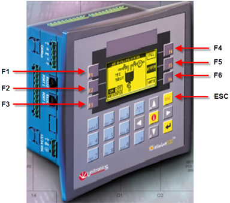
Information for individual screens is listed in the sections that follow.
Illustration 6: Heat Exchanger (Main)
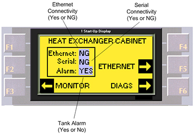
| NOTE: | NG stands for No Good. |
Illustration 7: Ethernet Settings
Illustration 8: Monitor
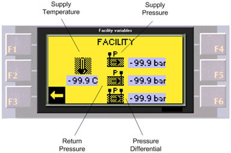
Illustration 9: Cryocooler Compressor
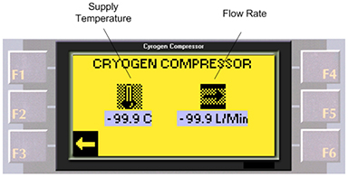
Illustration 10: Gradient Coil, Screen 1
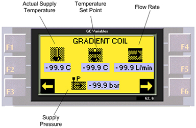
Illustration 11: Gradient Coil, Screen 2
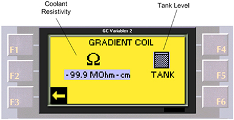
Illustration 12: Power Electronics, Screen 1
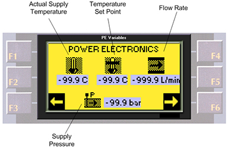
Illustration 13: Power Electronics, Screen 2
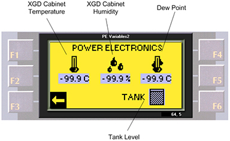
Illustration 14: Diagnostics
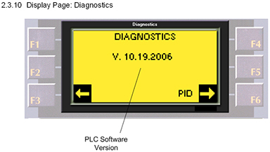
Illustration 15: PID Monitor
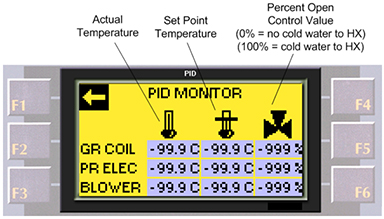
The MR Host Computer will automatically write the required parameters for Ethernet communication with the PLC via the serial cable connecting the Signal box to the MR system.
| ||||
| If the HEC Controller does not display an ethernet address after being connected to the MR host computer, the following steps will manually enter the ethernet address. | ||||
Go to the PLC.
Press [F5] to go the Ethernet screen.
Illustration 16: HEC Main Screen
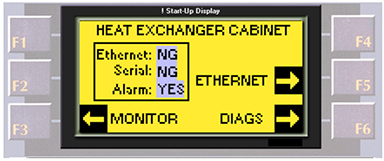
Make a note of the IP Address. (To return to the main screen, press [ESC].)
| NOTE: | If unable to navigate through the screens, make sure the system is not scanning, and reset the power to the cooling cabinet by flipping the left circuit breaker that is farthest left in the Power Box. |
If the PLC does not display the Ethernet settings, follow the steps below after plugging the CAT5 Ethernet Cable into the PLC:
Go to the PLC, and press [F5] on the HEC Main screen. (See Illustration 16.)
Illustration 17: Entering IP Address
At the screen shown in Illustration 17, type the appropriate numbers and press <Enter> after each entry. (Use the IP Address noted above.)
| NOTE: | It may be necessary to press the button for a fraction longer so the cursor moves to the next slot. |
Enter IP: 10.0.1.11.
Enter Sub Mask (subnet mask): 255.255.0.0.
Enter Gateway: 10.0.1.1.
Press <F6> to save the network settings.
| NOTE: | Once the settings are saved, the main screen will display.
The Ethernet readout on the PLC will display: OK instead of NG once the connection TPS reset is
completed. If NG, there will be errors in the error log. (See Illustration 18.) Illustration 18: Ethernet Status 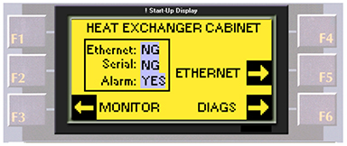 |
| ||||
| Pumps should be started and stopped using key sequences described, otherwise VFD damage can result | ||||
To toggle the pumps and blower On and Off, do the following:
Blower: Press and hold the Up arrow (<^>) and press <F1>.
Gradient Coil Pump: Press and hold the Up arrow (<^>) and press <F2>.
Power Electronics: Press and hold the Up arrow (<^>) and press <F3>.
A display panel, visible without opening the cabinet door, is mounted on the HEC. The display panel can display any of the following information:
Customer-Supplied Coolant:
Coolant Supply temperature [°C] and coolant Return pressure [bar].
Coolant Supply pressure [bar] and coolant Differential pressure [bar].
Cryo-cooler Compressor Coolant: Coolant supply temperature [°C] and coolant flow rate [L/min].
Gradient Coil Loop: Coolant supply temperature [°C], and:
Coolant supply temperature setpoint [°C]
Coolant supply pressure [bar]
Coolant supply flow rate [L/min]
Coolant resistivity [kOhm-cm]
Mixing valve position
Power Electronics Loop: Coolant supply temperature [°C] and:
Coolant supply temperature setpoint [°C]
Coolant supply pressure [bar]
Coolant flow rate [L/min]
PGR Cabinet ambient temperature [°C]
PGR Cabinet relative humidity [%]
PGR Cabinet dewpoint [°C]
Mixing valve position
Chilled Air: Air supply temperature [°C] and:
Air supply temperature setpoint [°C]
Air flow rate [fpm] from sensors in magnet bore
Mixing valve position
Software Revision
Ethernet Connectivity Status and:
Serial connectivity status
Ethernet addresses, including IP Address, Subnet Mask, and Gateway
PID parameters for the Gradient Coil, Power Electronics, and Chilled Air
Deionization Kit Service: Gradient Coil Coolant maintenance and PGR Cabinet maintenance
The HEC has both Ethernet and serial connections to obtain HEC status and sensor data as well as provide operating parameters. The Ethernet and serial cables are routed through the top of the HEC. The HEC Controller code was developed using Unitronics: VISION OPLC IDE 4.7.2, version 0 and OS 4.7.0, build 17.
The HEC shuts down the appropriate pumps, and registers an alarm when the reservoir volumes fall below the specified shut-off (alarm) levels.
The setpoint parameters listed in Table 6 through Table 9 are stored in a configuration file on the MR Host Computer and communicated to the HEC Controller via the communication protocol specified in Section 6.1.
Table 6: Operating Parameters
| Parameter | Units |
| Gradient Coil Coolant Temperature Setpoint [°C] | 0.1° C |
| Gradient Coil Pump Speed [Hz] | Hz |
| Power Electronics Pump Speed [Hz] | Hz |
| Chilled Air Temperature Setpoint [°C] | 0.1° C |
| Default Chilled Air Blower Speed [Hz] | Hz |
| Requested Chilled Air Velocity measured at gradient coil | feet/min. |
Table 7: Gradient Coil Coolant Temperature PID Parameters
| Parameter | Units |
| Gradient Coil Proportional Band | 0.1 % |
| Gradient Coil Integral Time | sec |
| Gradient Coil Derivative Time | sec |
| Gradient Coil Sample Time | 10 msec |
| Gradient Coil process Value Lower Limit | 0.1° C |
| Gradient Coil process Value Upper Limit | 0.1° C |
| Gradient Coil Control Value Lower Limit | bits |
| Gradient Coil Control Value Upper Limit | bits |
Table 8: Power Electronics Coolant Temperature PID Parameters
| Parameter | Units |
| Power Electronics Proportional Band | 0.1 % |
| Power Electronics Integral Time | second |
| Power Electronics Derivative Time | second |
| Power Electronics Sample Time | 10 msec. |
| Power Electronics Process Value Lower Limit | 0.1° C |
| Power Electronics Process Value Upper Limit | 0.1° C |
| Power Electronics Control Value Lower Limit | bits |
| Power Electronics Control Value Upper Limit | bits |
Table 9: Chilled Air Temperature PID Parameters
| Parameter | Units |
| Chilled Air Temperature Proportional Band | 0.1 % |
| Chilled Air Temperature Integral Time | sec |
| Chilled Air Temperature Derivative Time | sec |
| Chilled Air Temperature Sample Time | 10 msec |
| Chilled Air Temperature Process Value Lower Limit | 0.1° C |
| Chilled Air Temperature Process Value Upper Limit | 0.1° C |
| Chilled Air Temperature Control Value Lower Limit | bits |
| Chilled Air Temperature Control Value Upper Limit | bits |
The information in Table 10 is communicated to the HEC Controller via the communication protocol specified in Section 6.1.
Table 10: PGR Cabinet Humidity and Temperature Parameters
| Parameter | Units |
| PGR Cabinet Internal Relative Humidity | 0% |
| PGR Cabinet Internal Ambient Temperature | 0.1° C |
The warning/alarm levels shown in Table 11 through Table 15 are stored on the MR Host Computer and communicated to the HEC Controller via the communication protocol specified in Section 6.1.
Table 11: Customer-Supplied Coolant Warning/Alarm Parameters
| Parameter | Units |
| Customer Coolant Low Temperature Alarm | 0.1° C |
| Customer Coolant High Temperature Warning | 0.1° C |
| Customer Coolant High Temperature Alarm | 0.1° C |
| Customer Coolant Low Supply Pressure Alarm | 0.1 bar |
| Customer Coolant High Supply Pressure Alarm | 0.1 bar |
| Customer Coolant Low Return Pressure Alarm | 0.1 bar |
| Customer Coolant High Return Pressure Alarm | 0.1 bar |
| Customer Coolant Low Pressure Difference Alarm | 0.1 bar |
| Customer Coolant Reversed Flow Alarm | ----- |
Table 12: Gradient Coil Coolant Warning/Alarm Parameters
| Parameter | Units |
| Gradient Coil Coolant Low Temperature Alarm | 0.1° C |
| Gradient Coil Coolant High Temperature Alarm | 0.1° C |
| Gradient Coil Coolant Low Supply Pressure Alarm | 0.1 bar |
| Gradient Coil Coolant High Supply Pressure Alarm | 0.1 bar |
| Gradient Coil Coolant Low Flow Alarm | L/min |
| Gradient Coil Coolant Low Flow Warning | L/min |
| Gradient Coil Coolant High Flow Alarm | L/min |
| Gradient Coil Low Resistivity Warning | kOhm-cm |
| Gradient Coil Low Resistivity Alarm | kOhm-cm |
| Gradient Coil Reservoir Low Warning | ----- |
| Gradient Coil Reservoir Low Alarm | ----- |
Table 13: Power Electronics Coolant Warning/Alarm Parameters
| Parameter | Units |
| Power Electronics Coolant Low Temperature Alarm | 0.1° C |
| Power Electronics Coolant High Temperature Alarm | 0.1° C |
| Power Electronics Coolant Temperature Change High Alarm | 0.1° C |
| Power Electronics Coolant Low Supply Pressure Alarm | 0.1 bar |
| Power Electronics Coolant High Supply Pressure Alarm | 0.1 bar |
| Power Electronics Coolant Low Flow Alarm | L/min |
| Power Electronics Coolant Low Flow Warning | L/min |
| Power Electronics Coolant High Flow Alarm | L/min |
| Power Electronics Coolant Low Warning | ----- |
| Power electronics reservoir low alarm | ----- |
Table 14: Chilled Air Warning/Alarm Parameters
| Parameter | Units |
| Chilled Air Low Temperature Alarm | 0.1° C |
| Chilled Air High Temperature Warning | 0.1° C |
| Chilled Air High Temperature Alarm | 0.1° C |
Table 15: Cryo-Cooler Compressor Warning/Alarm Parameters
| Parameter | Units |
| Cryo-cooler Compressor Low Flow Alarm | L/min |
| Cryo-cooler Compressor High Flow Alarm | L/min |
The HEC provides configuration information through digital input memory addresses I9 and I10 as shown in Table 16.
Table 16: Heat Exchanger Cabinet Versions
| 5161931 PSP | Cabinet Version | I9 | I10 |
| Rev 1 | Generation 2 | 0 | 0 |
| Rev 2 to present revision | Generation 3 |
The HEC provides the sensor information for logging onto the MR Host Computer at the addresses shown in Table 17.
Table 17: Sensor Information for MR Host Computer
| Parameter | Units |
| Customer Coolant Supply Temperature | 0.1° C |
| Customer Coolant Supply Pressure | 0.1 bar |
| Customer Coolant Return Pressure | 0.1 bar |
| Gradient Coil Coolant Temperature | 0.1° C |
| Gradient Coil Coolant Flow Rate | 0.1 L/min |
| Gradient Coil Supply Pressure | 0.1 bar |
| Gradient Coil Resistivity | 0.1 kOhm-cm |
| Power Electronics Coolant Temperature | 0.1° C |
| Power Electronics Coolant Flow Rate | 0.1 L/min |
| Power Electronics Supply Pressure | 0.1 bar |
| PGR Cabinet Temperature | 0.1° C |
| PGR Cabinet Relative Humidity | 0.1% |
| Chilled Air Temperature | 0.1° C |
| Cryo-cooler Compressor Flow Rate | 0.1 L/min |
| Gradient Coil PID Control Value | bits |
| Power Electronics Control Value | bits |
| Chilled Air Temperature PID Control Value | bits |
| Chilled Air Flow Rate PID Control Value | bits |
| Chilled Air Blower Frequency | Hz |
| Power Electronics Pump Frequency | Hz |
| Gradient Coil Pump Frequency | Hz |
| Chilled Air Temperature PID Status | ----- |
| Chilled Air Flow PID Status | ----- |
| Power Electronics PID Status | ----- |
| Gradient Coil PID Status | ----- |
| Minimum Chilled Air Velocity at Coil | feet/minute |
| Measured Chilled Air Velocity at Coil | feet/minute |
The HEC physical characteristics are derived from the XGD Cabinet Frame shown in GE Healthcare Document 5173027. The supplier provides mounting holes on both sides of the cabinet for the Magnet Monitor.
The HEC functions and meets all performance requirements after exposure to any combination of the following environments:
Ambient Temperature: -40 to 70° C with a maximum positive/negative rate of change of 20° C/hour.
Humidity: Between 5% and 100%, condensing, with the maximum allowable positive/negative rate of change of 30% per hour.
Altitude: 30.5 m below sea level to 5200 m above sea level. Non-operating conditions cover air transport for the heat exchanger cabinet.
Magnetic Field: 50 Gauss
The HEC does not corrode under operation, shipping, or storage after exposure to water.
The HEC meets all performance requirements during exposure to any combination of the following indoor environments:
Ambient Temperature: 10° to 35° C, with a maximum positive/negative rate of change of 10° C/hour.
Humidity: Between 30% and 75%, non-condensing, with the maximum allowable positive/negative rate of change of 5% per hour.
Altitude: 30.5 m below sea level to 2,500 m above sea level.
Magnetic Field: 50 Gauss.
Elevation above MR System: 5 m.
Elevation below MR System: 5 m.
Periodic maintenance is limited to coolant filtering and deionization and changing the cryo-cooler compressor filter only.
PM and Service procedures are defined by Lytron and the GE Healthcare Service Engineering Department.